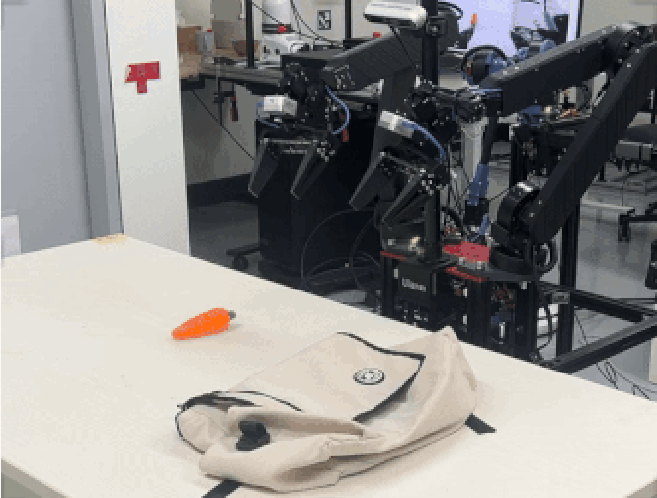
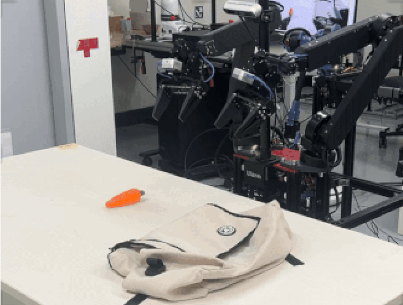

Hokyun Im
I am majoring in Artificial Intelligence at Yonsei University, under the guidance of Professor Youngwoon Lee.
My interest lies at the intersection of robotics and AI. I want to study how to use AI to make robots more intelligent and interactive in the real world, especially in decision making, reasoning, and using foundational models.
I am currently doing a research internship at Microsoft Research Asia.
Previously: Research intern at MLCS Lab (Prof. Jongeun Choi) and CLVR Lab (Prof. Joseph J. Lim).
Publications
 

TwinVLA: Data-Efficient Bimanual Policy through Twin Single-Arm Vision-Language-Action Models
Hokyun Im • Euijin Jeong • Jianlong Fu • Andrey Kolobov • Youngwoon Lee
Preprint
We introduce TwinVLA, a vision-language-action (VLA) model for bimanual manipulation that fusing pretrained single-arm VLA models. This design reduces reliance on scarce bimanual data while achieving comparable performance.
Projects


End-to-End Visual Indoor Drone Navigation with Foundation Model
Project Lead, Yonsei Drone (2024)
Previously, distance-sensing sensors such as depth cameras were necessary for drone navigation. With the advancement of foundation models, we successfully accomplished indoor navigation using only a front-facing RGB image by leveraging the CrossFormer model.


Autonomous Drone for Food Delivery (KRAC 2023 2nd Place)
Yonsei Drone (2023)
Fully autonomous outdoor drone navigation using GPS to travel long distances, avoid obstacles, reach the destination to deliver items, and return safely.
I led the development of building approach algorithms, and worked on safe landing using Sim2Real RL.
Other Projects & Activities
dm_control based bimanual tabletop simulation / dataset for testing bimanual robot policy.
A student-led drone research society. I served as the 4th president.
The leading academic society for AI at Yonsei University. I was a 11th member.
A toy project that allows interactive, real-time manipulation of the latent representation of a VAE on a webpage. Implemented using TensorFlow.js.
HTML games developed in JavaScript during spare time in the military. Quite fun to play haha.
A simple pendulum simulator designed as an educational tool. It allows students to explore and understand the principles of PID control.